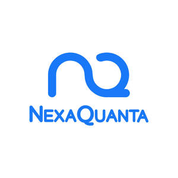
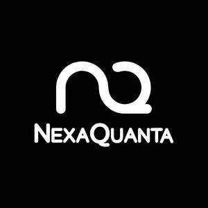

Trade Mark Journal No.2025/048 28 November 2025
UK00004296005 17 November 2025 (9,35,42,45)
Mark 1

Mark 2

- Class 9
- Software; Artificial intelligence software; Artificial intelligence apparatus; Artificial intelligence software for surveillance; Artificial intelligence software for analysis; Artificial intelligence software for healthcare; Artificial intelligence software for vehicles; Artificial intelligence and machine learning software; Artificial intelligence software for driverless cars; Interactive software based on artificial intelligence; Software for the integration of artificial intelligence and machine learning in the field of Big Data; Data processing programs recorded on machine-readable data carriers; Data networks; Data loggers; Data processors; Data terminals; Data processing software; Data transmitters; Data processing systems; Data communications software; Data storage programs; Data processing programs; Data mining software; Data encryption apparatus; Data engines; Computers for use in data management; Data transmission networks; Data compression software; Data processing equipment; Data processing terminals; Data storage apparatus; Software for the analysis of business data; Data processing apparatus; Data management software; Software testing software; Business software; Accounting software; Business management software; Publishing software; Surveying software; Enterprise software; Business technology software; Training software; Telecommunications software; Financial management software; Software reliability software; Collaboration software platforms [software]; Project management software; Logistics software; Networking software; Communications software; Interactive business software; Computer software for document management; Computer software development tools; Product engineering software; E-commerce software; Computer software for computer aided software engineering; Business application software; Manufacturing software; Computer software for database management; Database management software; Collaborative software; Document management software; Web development software; Network management software; Application development software; Software development programs; Software development tools; Application software; Software development programmes; Optimisation software; Software for product development; Workflow software; Server-side software; Debugging software; Interface software; Application simulation software; Computer software for application and database integration; Workflow management system software; Document automation software; Website development software; Programming software; Scheduling software; Document management system software; Development environment software; System software; Authentication software; Encryption software; Simulation software; Product lifecycle management software; Game development software; System support software; Compiler software; Software compiler; Collaboration software; Testing software; Software applications; Cryptography software; Application suites [software]; Decision-making software; Software for the planning, integration and optimization of Smart City applications; Computer software programs for database management; Maintenance software; Collaboration management software platforms; Software for the planning, integration and optimisation of smart city applications; Computer application software; Media development software; Downloadable application software; Integrated software packages.
- Class 35
- Retail services for computer software; Management consulting; Business consulting; Business management and consulting services; Business management consulting services; Business management and consulting; Business management consulting; Marketing in the framework of software publishing; Business consulting services; Business research consulting; Professional business consulting; Business marketing consulting services; Business organisation consulting; Business process management and consulting; Business organization consulting; Consulting services in business organization and management; Business organisation and management consulting services; Acquisitions (Business -) consulting services; Business planning and business continuity consulting; Business consulting for enterprises.
- Class 42
- Development of computer hardware and software; Computer software integration; Computer software development; Development of computer software; Computer software consultancy; Consultancy (Computer software -); Software engineering; Computer software consulting; Software authoring; Computer hardware and software design; Design of computer hardware and software; Software development in the framework of software publishing; Computer software design; Software design (Computer -); Computer software (Design of -); Design of computer software; Computer software engineering; Software development; Development of software; Computer software installation; Computer software (Installation of -); Installation of computer software; Testing of computer software; Update of computer software; Design of software; Software design; Rental of computer hardware and software; Duplication of computer software; Installation of software; Software installation; Configuration of computer software; Design and development of computer hardware and software; Development of computer database software; Computer software (Maintenance of -); Maintenance of computer software; Computer software maintenance; Leasing of computer software; Computer software design services; Services for the design of computer software; Design of computer database software; Developing computer software; Software as a service [SaaS] featuring software for machine learning; Upgrading of computer software; Development of computer software application solutions; Updating of computer software; Software (Updating of computer -); Computer software (Updating of -); Computer software programming services; Hiring of computer software; Computer software research; Artificial intelligence consultancy; Artificial intelligence as a service (AIAAS); Research in the field of artificial intelligence; Technology consultation in the field of artificial intelligence; Research in the field of artificial intelligence technology; Platforms for artificial intelligence as software as a service [SaaS]; Providing artificial intelligence computer programs on data networks; Software as a service [SaaS] featuring computer software platforms for artificial intelligence; Data warehousing; Data mining; Electronic data storage and data back-up services; Decoding of data; Computer services for the analysis of data; Computerised data storage; Data encryption services; Technical data analysis; Data conversion of electronic information; Electronic data storage; Electronic storage of data; Recovery of computer data; Data decryption services; Data duplication and conversion services, data coding services; Research relating to data processing; Data conversion of computer program data or information [not physical conversion]; Hosting of computerized data, files, applications and information; Temporary electronic storage of information and data; Online data storage; Recovery of smartphone data; Data migration services; Data back-up services; Data recovery services; Technical data analysis services; Updating of software for data processing; Off-site data backup; Data storage via blockchain; Computerised data storage services; Data encryption and decoding services; Compression of data for electronic storage; Software consulting services; Computer software consulting services; Computer and software consultancy services; Computer software consultancy services; Software consultancy services; Consulting services relating to computer software; Professional consultancy relating to computer software; Consultancy relating to computer software; Computer consulting services; Research and consultancy services relating to computer software; Consultancy in the field of computer software; Consulting services in the field of software as a service [SaaS]; Consultancy services in relation to computer software; Software engineering services; Consultancy and advice on computer software and hardware; Computer software advisory services; Consultancy in the field of software design; Technical consultancy relating to the application and use of computer software; Consultancy relating to the design and development of computer software programs; Consultancy and information services relating to computer software design; Services for designing computer software; Software research; Computer software consultation; Advisory services relating to computer software used for publishing; Professional advisory services relating to computer software; Consultancy in the field of security software; Services for the leasing of computer software; Advisory services relating to computer software design; Computer engineering consultancy services; Services for the writing of computer software; Software development services; Consultancy relating to software maintenance; Providing information, advice and consultancy services in the field of computer software; Consultancy and information services relating to the design, programming and maintenance of computer software; Consultancy relating to software design and development; Advisory and consultancy services relating to computer and video games software; Consultancy services relating to software used in the field of e-commerce; Technical services for the downloading of software; Consultancy relating to the updating of software; Computer software technical support services; Technical consultancy relating to the installation and maintenance of computer software; Advisory services relating to the use of computer software; Advisory services relating to computer software; Computer consultancy services; Advice and development services relating to computer software; Computer consultancy; Consultancy relating to software for communication systems; Advisory services relating to computer software used for printing; Advisory and consultancy services relating to the design and development of computer hardware; Research and development of computer software; Design and development of computer software for logistics; Services for updating computer software; Computer technology consultancy; Consultation services relating to computer software; Advisory and consultancy services relating to computer hardware; Design services relating to computer software; Design and development of computer software; Computer software design and development; Development services relating to computer software application solutions; Consultancy in the design and development of computer hardware; Computer hardware (Consultancy in the design and development of -); Design and development of antivirus software; Research and consultancy services relating to computer hardware; Software as a service; Professional consultancy services relating to computer programming; Design and development of computer database software; Information technology consulting; Services for maintenance of computer software; Computer software maintenance services; Programming of telecommunications software; Design and development of computer software for use with medical technology; Design and development of software for database management; Computer consultancy and advisory services; Information technology [IT] consulting services; Information technology [IT] consultancy; IT services; IT consultancy, advisory and information services; IT project management; IT service management [ITSM]; Information technology [IT] support services [troubleshooting of software]; Information technology consulting services; Professional consulting services and advice about agricultural chemistry; Control technology consulting services; Technical planning and consulting in the field of light engineering; IT services for data protection; Engineering consultancy; Engineering consultancy services; Software development, programming and implementation; Design, development and implementation of software; Software design and development; Design and development of computer software for evaluation and calculation of data; Design and development of data processing software; Development and testing of software; Design and development of operating system software; Design and development of data retrieval software; Design, development and programming of computer software; Design and development of driver software; Development and testing of computing methods, algorithms and software; Design and development of electronic database software; Design, maintenance, development and updating of computer software; Development of software for communication systems; Design and development of computer software for process control; Development of driver software; Development of operating system software; Development and maintenance of computer software; Design and development of computer software architecture; Programming of software for website development; Development and maintenance of computer database software; Design and development of software for importing and managing data; Software creation; Development, updating and maintenance of software and database systems; Design and development of software for inventory management; Research, development, design and upgrading of computer software; Programming of software for database management; Design and development of computer game software and virtual reality software; Design and development of word processing software; Design and development of computer software for others; Programming of computer software for evaluation and calculation of data; Design and development of software for website development; Design and development of operating software for cloud computing networks; Design and development of image processing software; Design and development of software for instant messaging; Design and development of single sign-on software; Design of operating system software; Design and development of energy management software; Development of application software for delivery of multimedia content; Design and development of firmware systems; Design and development of computer software for vehicle simulation; Design and development of route planning software; Design and development of operating software for computer networks and servers; Installation of database software; Computer programming and software design; Research relating to the development of computer programs and software; Computer software design and updating; Updating and design of computer software; Maintenance of software; Image processing software development.
- Class 45
- Computer software licensing; Licensing of computer software; Licensing of software; Software licensing; Consultancy relating to computer software licensing; Licensing of computer software [legal services]; Computer software (Licensing of -) [legal services]; Computer software licensing [legal services]; Licensing [legal services] in the framework of software publishing.
UZAM Limited